Unless noted otherwise, every result above uses uplo = "lower". Real workgroups dispatch in increasing index order, so uplo = "upper" front-loads the heaviest rows first (worse — long-running heavy workgroups have nothing to overlap with) while lower back-loads them (better — light rows clear fast, the heavy tail gets full GPU to itself) — collapsed below by default, expand a uplo value to see its table and chart.
uplo.ssyr2.c — CUDA / cuBLAS uplo-sweep reference script
Lda sweep
Unless noted otherwise, every result above uses a tight lda (no padding). Padding the row stride changes throughput here — the exact mechanism and shape of that effect is routine-specific — collapsed below by default, expand a pad value to see its table and chart.
Benchmark results for ssyr2 on Nvidia Geforce Gtx 1650.
Nvidia Geforce Gtx 1650 — wgblas vs cuBLAS
See also
Uplo sweep
Unless noted otherwise, every result above uses
uplo = "lower". Real workgroups dispatch in increasing index order, souplo = "upper"front-loads the heaviest rows first (worse — long-running heavy workgroups have nothing to overlap with) whilelowerback-loads them (better — light rows clear fast, the heavy tail gets full GPU to itself) — collapsed below by default, expand auplovalue to see its table and chart.Nvidia Geforce Gtx 1650 — uplo = lower
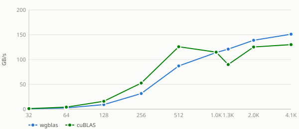
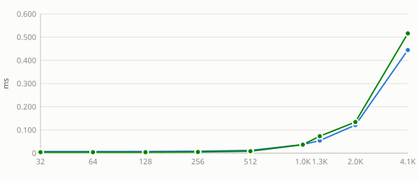
Nvidia Geforce Gtx 1650 — uplo = upper
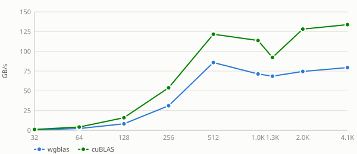
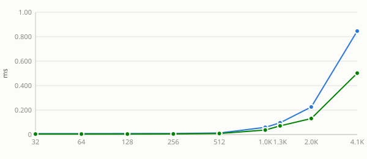
See also:
Lda sweep
Unless noted otherwise, every result above uses a tight
lda(no padding). Padding the row stride changes throughput here — the exact mechanism and shape of that effect is routine-specific — collapsed below by default, expand apadvalue to see its table and chart.Nvidia Geforce Gtx 1650 — pad = 0
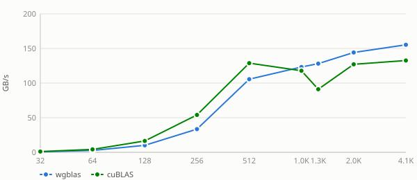
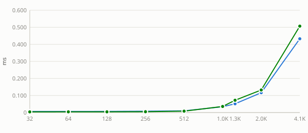
Nvidia Geforce Gtx 1650 — pad = 1
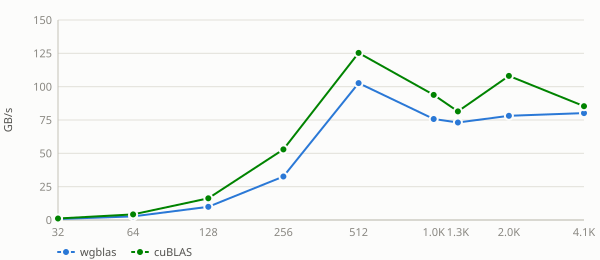
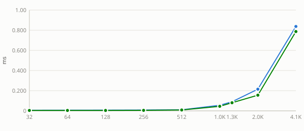
Nvidia Geforce Gtx 1650 — pad = 8
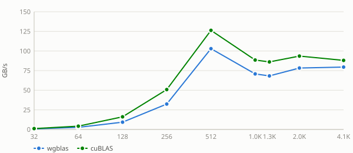
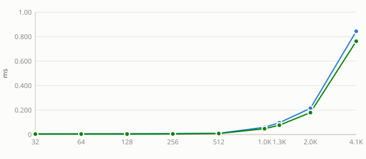
Nvidia Geforce Gtx 1650 — pad = 16
Nvidia Geforce Gtx 1650 — pad = 32
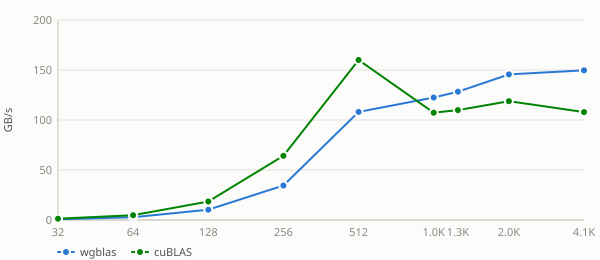
Nvidia Geforce Gtx 1650 — pad = 48
Nvidia Geforce Gtx 1650 — pad = 64
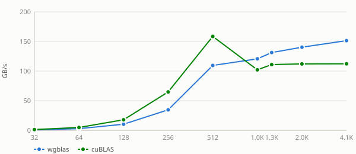
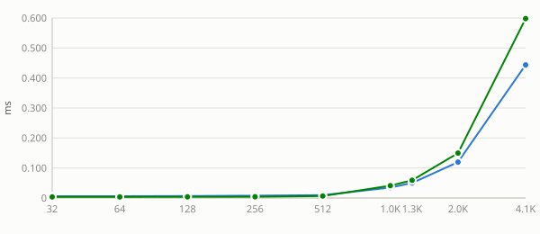
Nvidia Geforce Gtx 1650 — pad = 128
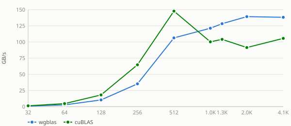
See also: